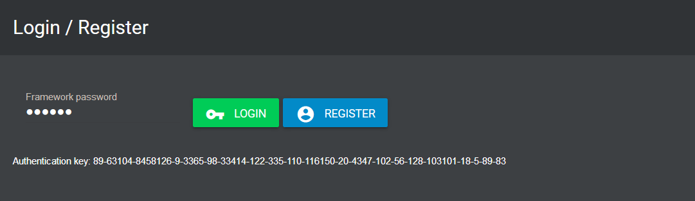
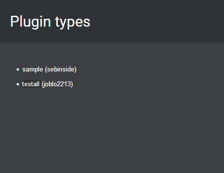
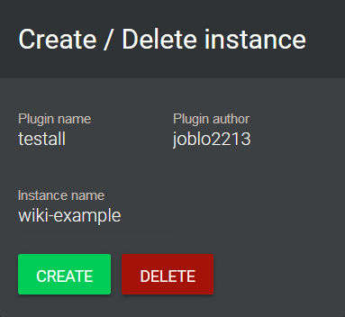
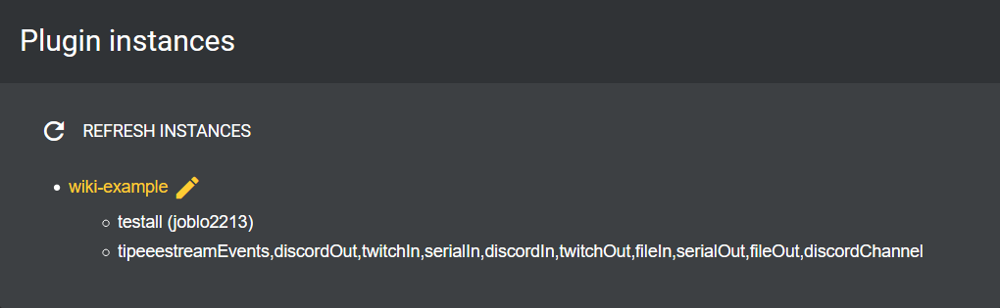
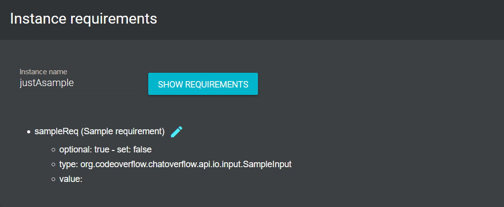
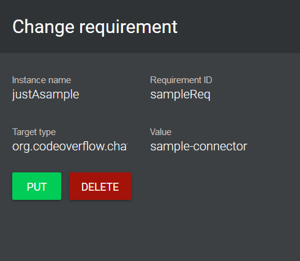
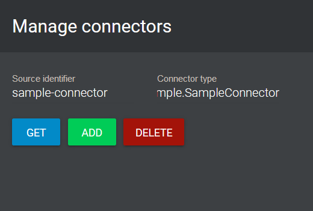
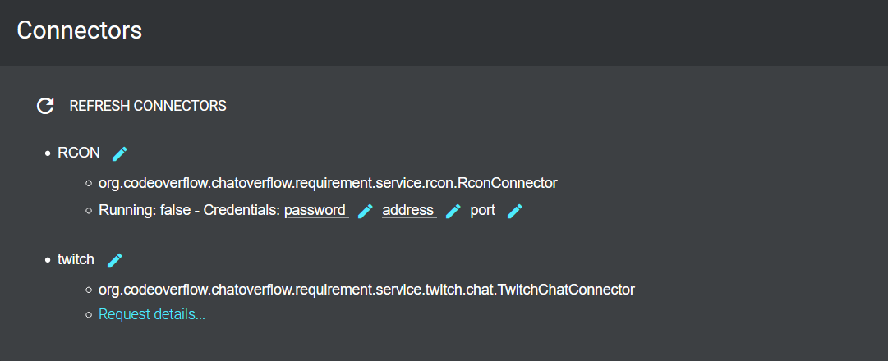
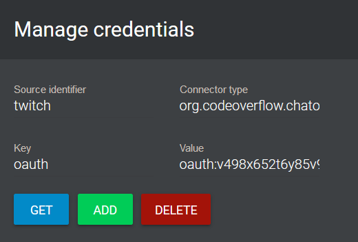

Using the GUI
The GUI for chatoverflow is still in development.
That's why we have the Better REPL, an easy-to-use one-page dashboard, where everything can be controlled.
Starting the Better REPL¶
When using the GUI for the first time use the [Advanced] run configuration that packages the gui. Make sure to reload sbt afterwards to make IntelliJ find and load the gui.
For all further runs you may use the [Simple] run configuration which is way faster.
Once the framework is running open http://localhost:2400/ in a browser and wait for the server status to display Connected!. Now click on OPEN BETTER REPL.

When running for the first time enter a password that you want to use for securing your credentials and click on REGISTER.
If you are already registered, use your password to login.
If the login was successful the gui will display the authentication key for this session.
Creating a plugin instance¶
Before running a plugin you have to create a plugin instance.
All available plugins are listed under Plugin types.
Add more plugins by putting the plugin .jar files into the plugins folder. If you are adding new plugins to the folder while the framework is still running, you need to restart the framework in order for it to load the newly added plugins.

Enter the plugin and author name of the plugin and give the instance a name (whatever you like), then click on CREATE:

The plugin instance should now be listed under Plugin instances:

You can use the pen to copy the name of an instance.
There are buttons that allow you to START / STOP an instance, to show its log (if running) or requirements and a button to DELETE the instance (just make sure to stop it before deleting it).
Setting plugin requirements¶
Before you can start a plugin you need to set its requirements.
A plugin can require a lot of things, for example Strings, Inputs or Outputs.
To view all requirements of a plugin enter the instance name and click on SHOW REQUIREMENTS.

You see that each requirement has a type and needs a value.
You see which requirements are already set and which ones are optional.
To set or change the value click on the blue pen, enter the required value and click on PUT.

For inputs and outputs the value should be the source identifier of a connector - which you first have to define.
Adding connectors¶
To add a connector use whatever source identifier you like, specify the connector type (a list of all types can be found in the connector types box above) and click ADD. It will then be displayed in the list on the left side.

Set credentials¶
Every connector requires you to set the credentials for that service.
Some of them are required for the connector to work and some are optional.

Click on the Request details... link. Then the gui will display if the connector is running and which credentials should be set. Underlined ones are required, the plain ones are optional.
Use the blue pen to copy the key, the identifier and the type of the connector and then use the manage credentials field to add the value of the credentials.

If you are getting errors when adding credentials Frequent-Issues might contain a solution.
Please note: Added credentials are encrypted with AES 128/256. The password is not stored anywhere. If you loose your password, there will be no way to reuse your configured and saved credentials.